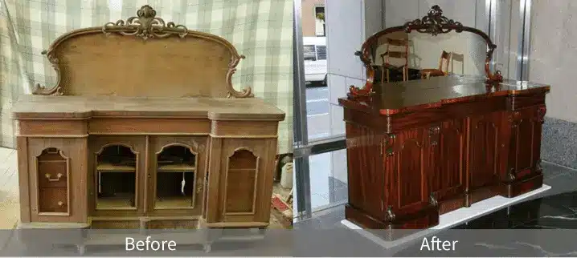
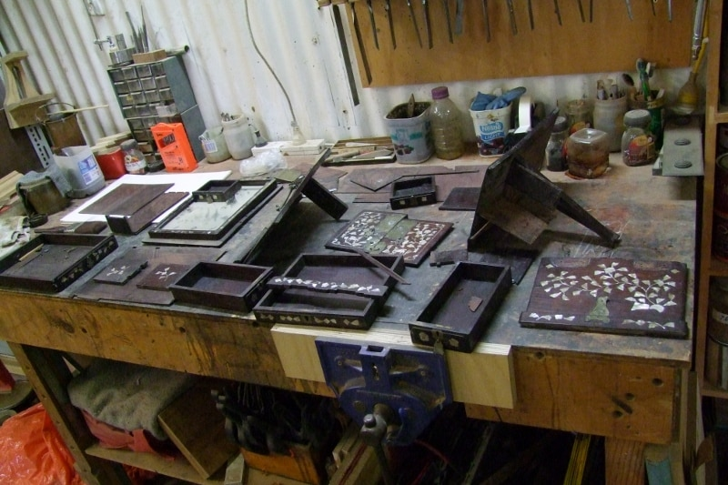
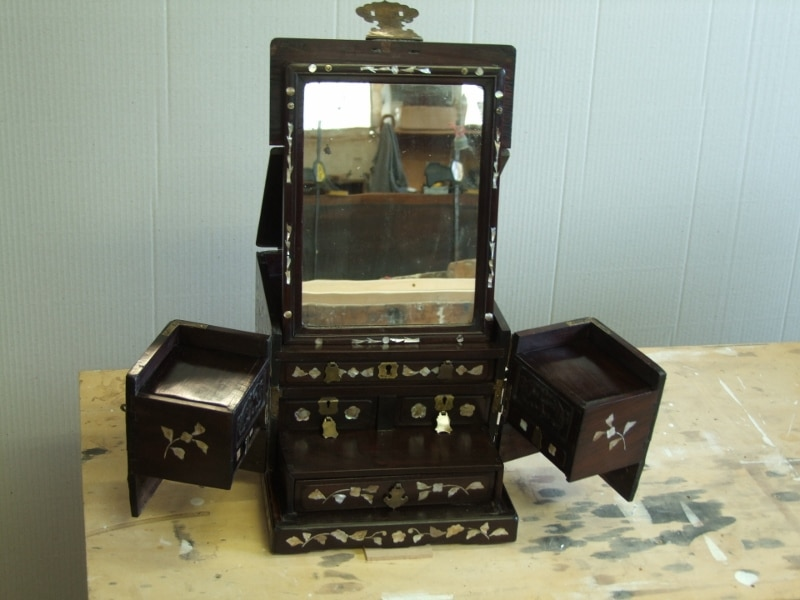

At Nikolaus Teply Restorations, we are Sydney’s master furniture restorer, dedicated to preserving and revitalising antique pieces with exceptional craftsmanship. We combine respect for historical authenticity with skilled handwork, ensuring your cherished furniture retains both its heritage and its value. As a professional furniture restorer Sydney clients depend on, we use time-honoured European techniques passed down through generations of artisans.
Sydney’s Premier Antique And Furniture Restoration Specialists
Entrusting valuable antiques to us means choosing a team committed to superior results. Our antique restorer Sydney services focus on maintaining the beauty and original design of each piece. We recognise that antique furniture carries stories and heritage, and through careful restoration and conservation, we preserve those narratives for future generations.

Preserving Historical And Financial Value
Each piece we restore begins with a careful assessment of its history and condition. Our objective as a furniture restoration specialist is not only to enhance appearance, but also to protect provenance and long term worth. Sentimental value matters, monetary value matters, and we balance both with measured care.
Services
Comprehensive Furniture And Art Restoration Services
We offer a wide range of tailored restoration and conservation services for antique furniture and related art forms. From domestic heirlooms to commercial heritage pieces, our work is precise, respectful, and focused on longevity.
Antique Furniture Restoration And Conservation
Nikolaus Teply Restorations specialises in antique furniture restoration Sydney homeowners and businesses rely on. Whether repairing loose joints, restoring veneer, or revitalising original finishes, our methods respect the craftsmanship of the period. Conservation work stabilises fragile elements and secures the longevity of your furniture while preserving its authenticity.
French Polishing And Veneer Repair
As a leading french polisher Sydney service, we apply traditional shellac polishing techniques to restore the warm, lustrous finish of period furniture. Our veneer repairs address warping, peeling, or missing sections with precise, patient work. The result is a finish that sits comfortably with the original character of the piece.
Restoration Of Wooden Art, Mirrors, Frames, Sculptures, And Clocks
Beyond furniture, we are wood restoration specialists Sydney clients trust for art conservation. Whether a carved mirror frame, ornate clock casing, or wooden sculpture, our team restores fine details through hand finishing and delicate repairs, ensuring these items retain their original charm and structural soundness.
Training
Expertise Backed By European Training
Our craft is rooted in traditional European methods. That training gives us the tools to recognise authentic materials, match historical finishes, and apply techniques that honour the original maker’s intent.
Traditional Restoration Techniques
Our team’s skills come from European-trained craftsmanship. This background equips us to use time-proven approaches, careful joinery repair, and period-appropriate finishing methods. The result is restoration that feels honest and looks right.
Knowledge Of Authentic Materials And Finishes
A detailed understanding of woods, stains, waxes, and shellacs is essential. That knowledge lets us select materials that protect and complement your pieces, preserving their integrity and appearance over time.
Understanding Our Restoration And Conservation Process
We explain the differences between restoration and conservation so you can choose the best path for each item. Our recommendations reflect the piece’s age, condition, provenance, and your own wishes.
What Is Restoration?
Restoration involves returning an item to a previous known state by repairing or replacing components where necessary. This can include fixing structural damage, refinishing surfaces, or reinstalling missing elements. Restoration is the right choice when the goal is to recover original function and appearance.
What Is Conservation?
Conservation focuses on stabilising the current condition of a piece to prevent further deterioration, while keeping interventions minimal and reversible. This approach suits highly valuable or fragile antiques that require careful handling and documentation.
Helping You Choose The Right Approach
We guide you through the decision, explaining risks, benefits, and likely outcomes. Our aim is clear advice, tailored to the item and to your priorities.
Trusted Furniture Restoration Specialist In Sydney
We take pride in our reputation, earned through careful work and satisfied clients. Respect for each piece, clear communication, and consistent results are central to how we operate.
Testimonials From Satisfied Clients
Attached are some photos of the furniture in its “home” – looks wonderful! Thanks again for a great job, we are really enjoying these beautiful pieces again and we will recommend you to anyone we know looking for restoration work.
Susan
Hi Nick, we just wanted to say thanks for all of the restoration work you have done for us – dining table, chairs, chiffonier. The furniture now looks fantastic and we appreciate your dedication in bringing each piece ‘back to life’.
Photos tell a story. Our galleries present striking restorations of antique furniture and artworks, showing the care and craft behind each project. Browse to see examples of repair, refinishing, and conservation.


BeforeAfter
Cambodian jewellery cabinet — before and after restoration.
Proven Credentials And Industry Recognition
With years of experience and certification from respected European institutions, our credentials validate our expertise. We adhere to industry standards and continue professional development to keep skills sharp. Nick trained as a traditional cabinetmaker in Garmisch-Partenkirchen in the mid-1980s, completed three years at the Goering Institute in Munich, and has run his own Sydney workshop since 2002.
Proudly Serving Sydney And Surrounding Areas
Nikolaus Teply Restorations proudly serves Sydney and nearby regions. Familiarity with local heritage styles helps us provide services suited to the city’s diverse history and design tastes. The workshop is in Marrickville, with pickup and delivery arranged by trusted removalists when needed.
Contact Us For Professional Antique Restorations
Restore your treasured antiques with Sydney’s trusted master furniture restorer. Visit our home page or contact us for a personalised consultation, and experience the Nikolaus Teply difference.